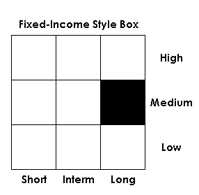

Created by Morningstar, a fixed-income style box is designed to visually represent the investment characteristics of bonds and bond mutual funds. This is a valuable tool for investors to use to determine the risk-return structures of their bonds/ bond portfolios and/or how these investments fit into their investing criteria.
Also referred to as a "bond style box". A fixed-income style box is made up of nine squares, with the investment features of bonds/bond mutual funds presented along its vertical and horizontal axes.
For bonds and bond funds, the horizontal axis is divided into three maturity categories: short term, intermediate term and long term. The vertical axis is divided into three credit-quality categories: high (AAA - AA), medium (A - BBB) and low (BB - C).
A fixed-income investor looking for safety would confine his or her bond or bond fund investments to the investment grade credit quality categories identified as high and medium, combined with the short- to intermediate-term maturity categories. For a risk taker, the category combination of low credit quality and long-term maturity will provide a high-risk, high-yield return.
{kind=link}